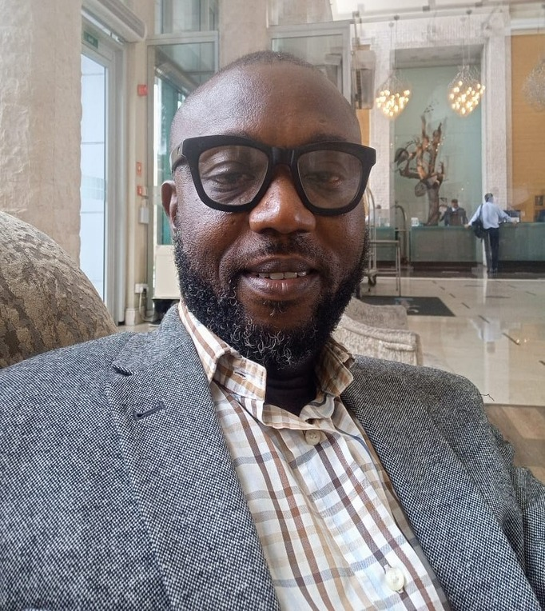

<div class="container">
  <div class="row">
      <div class="col-md-6 col-md-offset-3 text-center">
    <div id="team-view">
      
      <h3>Rotn. Arinze Okamelu</h3>
              <span class="id-color">Secretary</span>
      <div class="spacer-half"></div>
      <p class="text-left" style="color: #1f1f1f;">
        Arinze Okamelu is a Media and Marketing Communication expert with bias in Public Relations, Marketing and Advertising.<br/><br/>

        He is a Rotarian over 25years, a member and Past President of Rotary Club of Oregun and currently an Assistant Governor in Rotary International District 9110,Nigeria. <br/><br/>
        
        He has chaired several Rotary committees, both at his club and at district level, and his us currently the Secretary of 2023 District Governor Installation Committee.<br/><br/>
        
        Rotn. Arinze as he is fondly called, us married with children.
      </p>
      <div class="social-icons">
                          <a href="https://www.facebook.com/profile.php?id=100091933612047" target="_blank"><i class="fa fa-facebook fa-lg"></i></a>
                          <a href="https://twitter.com/9110Rotary" target="_blank"><i class="fa fa-twitter fa-lg"></i></a>
                          <a href="https://www.instagram.com/9110rotary/" target="_blank"><i class="fa fa-instagram fa-lg"></i></a>
                 
                      </div>
    </div>
      </div>
  </div>
</div>